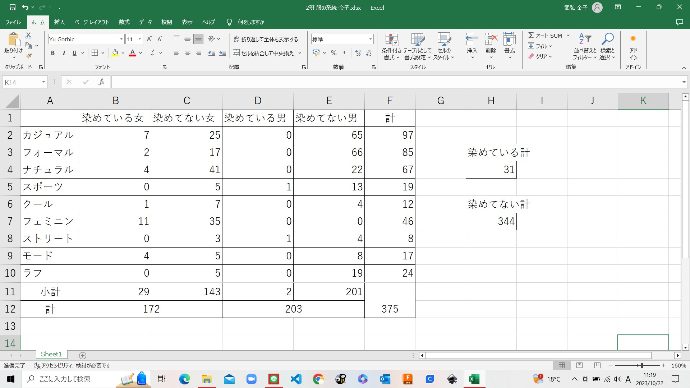

これらの画像は、男女それぞれの傾向を示したものです。男性は時間帯的に会社員の方がほとんどでした。会社の髪型・髪色の制限があるのか、スーツを来た人は皆黒髪でした。
女性の傾向は、染めている人の年齢の幅が広く、目的も様々>なようです。
②髪色と服装の関係

上の画像は、髪を染めている人・染めてない人それぞれの服の系統についてまとめたものです。
女性の多くは、染めてる染めてないに関係なく、女性的な服装をしていることが分かりました。 男性はそもそも髪を染めている人が少なく、服装の系統としては、カジュアル・フォーマル・ナチュラルの三つの系統が多数を占めていました。